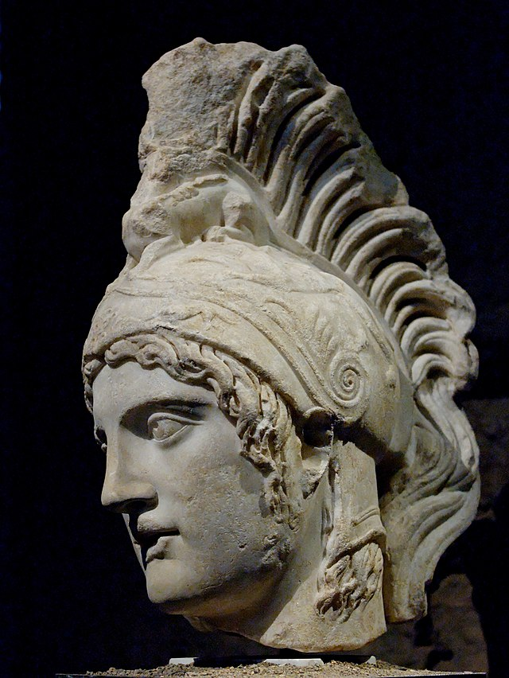
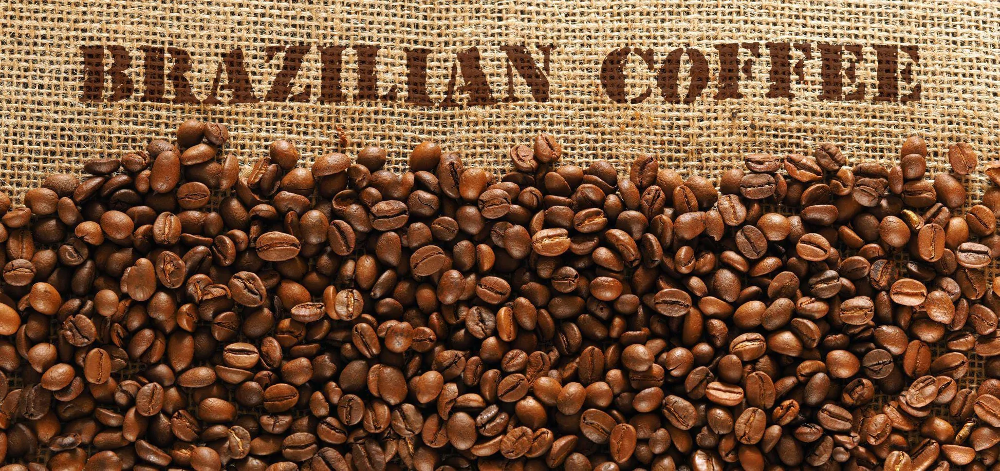

Flàneur Coffe;
Dionysos
- Orta gövde
- Orta asidite
- Rom (ağır ama korkutmayan keskinlikte), Kuru koku
- Kırmızı Meyveler
Ares
- Orta gövde
- Düşük asidite
- Doyurucu
- Odunsu,bal tatlılığı ve tatlı is
Brazilia - Ra (since 1727)
- Yoğun gövde
- Düşük asidite
- Çikolata, karamel, ceviz

